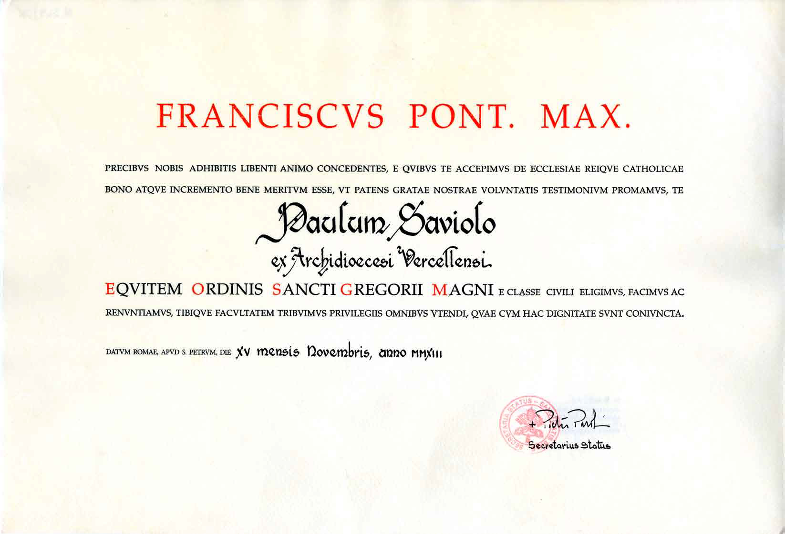

Fondazione Doing Philanthropy – Think Doing
Promuoviamo conoscenza, cultura, salute e solidarietà, trasformando le idee in azioni concrete per il bene comune.
Manifesto – 10 principi
- Ogni essere umano ha diritto alla felicità (responsabilità sociale).
- Fa ciò che ami: la vocazione personale genera valore per la collettività.
- Il denaro riflette azioni che creano valore comune.
- Rivoluzione della conoscenza: contenuti e idee come capitale principale.
- Rete della conoscenza: la condivisione moltiplica l’innovazione.
- Sussidiarietà: sostegno alle iniziative dal basso a impatto sociale.
- Cura del corpo e del pianeta.
- Sostegno al cambiamento (giovani, idee embrionali, contenuti nuovi).
- Pluralismo: dialogo tra differenze religiose, etniche, politiche.
- Think Doing: il pensiero che agisce.
Ambiti di intervento
Tutela e valorizzazione di beni di interesse artistico, storico e ambientale.
Raccolta fondi e finanziamento di progetti a impatto sociale e culturale.
Eventi, mostre, conferenze, laboratori, rassegne e iniziative educative.
Progetti editoriali (scritto, audio, video) e divulgazione culturale.
Reti di solidarietà con ONLUS, volontariato e terzo settore.
Progetti
Progetto 1
Descrizione breve (60–80 parole). Output attesi e indicatori di risultato.
Descrizione breve (60–80 parole). Output attesi e indicatori di risultato.
Progetto 2
Descrizione breve (60–80 parole). Output attesi e indicatori di risultato.
Descrizione breve (60–80 parole). Output attesi e indicatori di risultato.
Progetto 3
Descrizione breve (60–80 parole). Output attesi e indicatori di risultato.
Descrizione breve (60–80 parole). Output attesi e indicatori di risultato.
Trasparenza e documenti
Altri documenti saranno pubblicati qui: Statuto/Atto costitutivo, Bilanci, Relazioni di missione, Onorificenze.

Sostienici
Bonifico bancario
Intestato a: Fondazione Doing Philanthropy O.N.L.U.S.
IBAN: IT00 X000 0000 0000 0000 0000 000 (placeholder)
Causale: Donazione liberale
Contatti
Sede legale: Via Col di Lana 12 – 13100 Vercelli (VC)
Email: info@doingphilanthropy.org